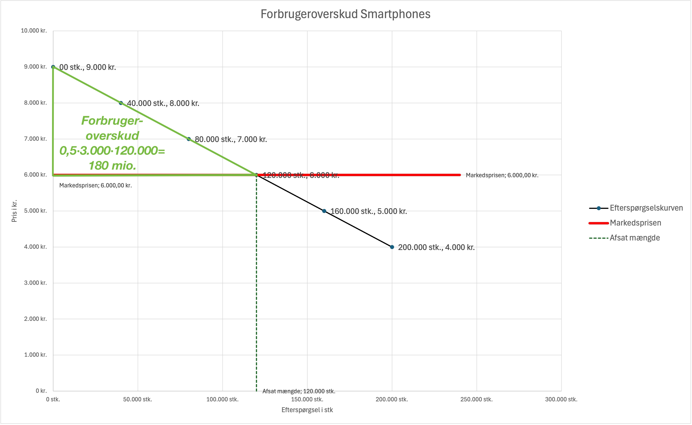
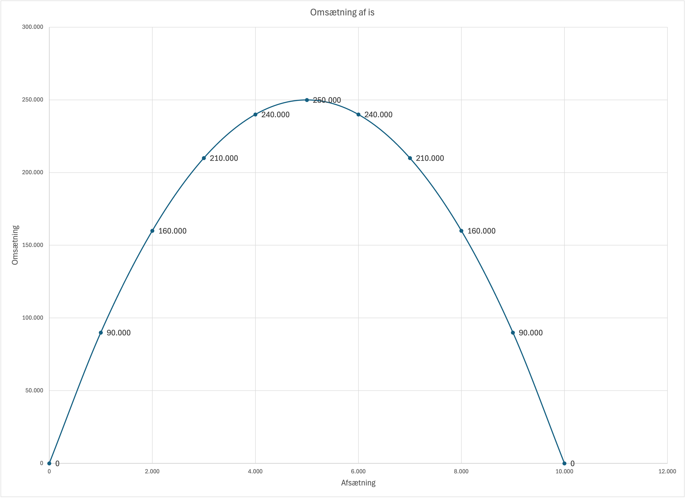
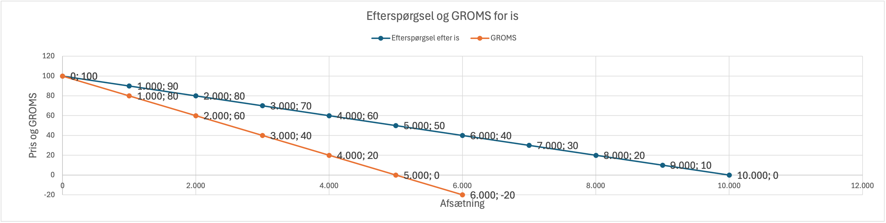
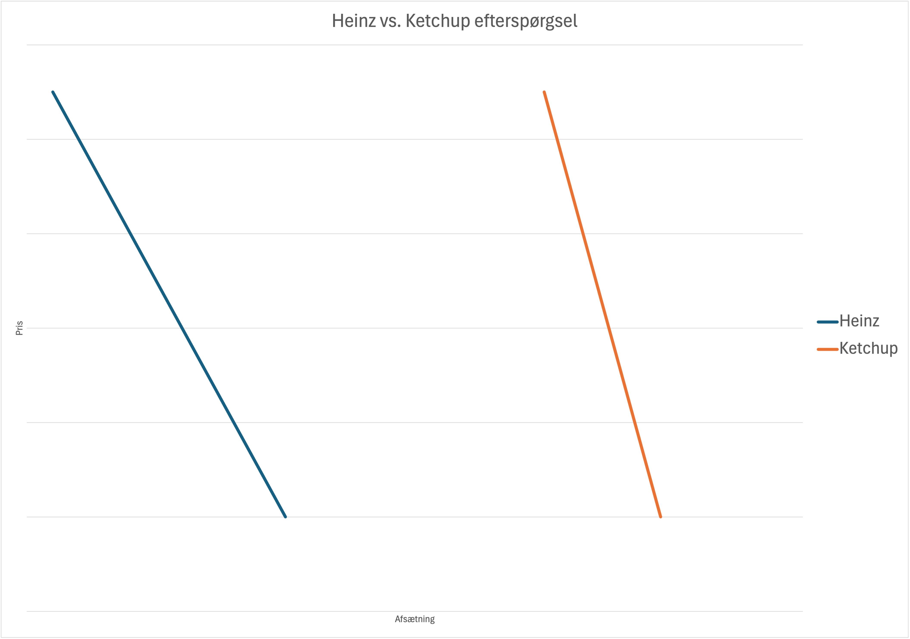
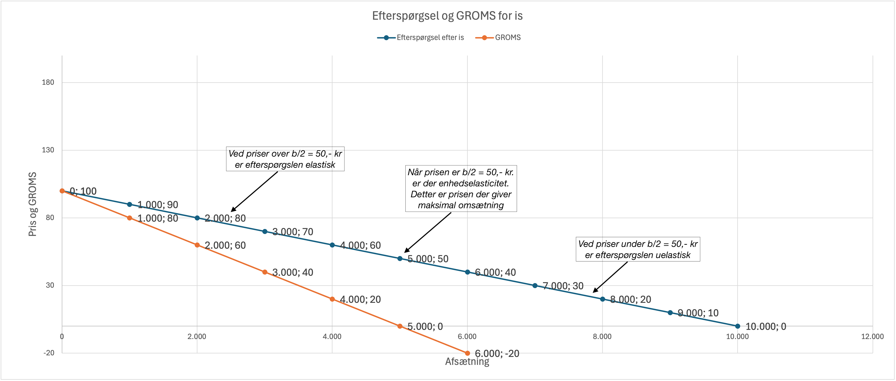
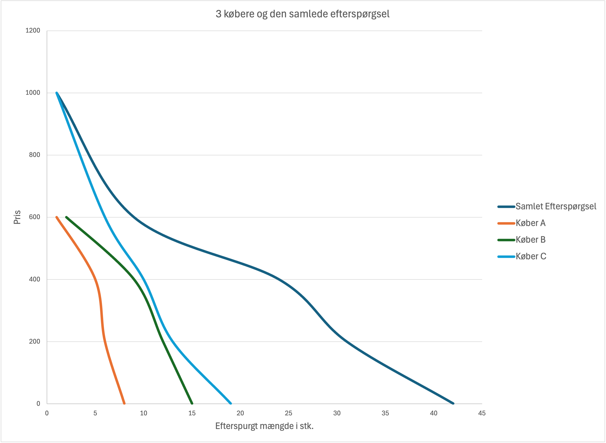

Efterspørgsel
Efterspørgsel er en af de grundlæggende kræfter på ethvert marked. Det handler om, hvor meget forbrugere er villige til at købe af en vare eller tjeneste ved forskellige priser. Forståelse af efterspørgsel er afgørende for både virksomheder, der skal fastsætte priser, og forbrugere, der træffer købsbeslutninger.
Hvad påvirker efterspørgsel?
- Pris på varen: Generelt gælder det, at jo højere pris, jo mindre efterspørgsel
- Indkomst: Højere indkomst øger normalt efterspørgslen efter de fleste varer
- Priser på relaterede varer: Substitutter og komplementer påvirker hinanden
- Smag og præferencer: Trends og mode kan ændre efterspørgslen markant
- Forventninger: Fremtidsudsigter påvirker købsbeslutninger
I dette kapitel ser vi på:
- Hvad er efterspørgsel, og hvordan måles den?
- Loven om efterspørgsel og dens forklaring
- Faktorer der påvirker efterspørgsel
- Efterspørgselselasticitet og dens betydning
- Reelle eksempler fra forskellige markeder
Lyt til podcast om kapitlet
Brugsværdi vs. markedsværdi
Før vi dykker ned i efterspørgselsteori, er det vigtigt at forstå forskellen mellem en vares brugsværdi og dens markedsværdi.
Brugsværdi (nytteværdi)
- Definition: Den værdi eller nytte som varen giver forbrugeren i form af behovsopfyldelse
- Individuel: Varierer fra person til person baseret på personlige præferencer og behov
- Subjektiv: Kan ikke måles direkte - afhænger af forbrugerens opfattelse
- Eksempel: En kop kaffe kan have høj brugsværdi for en morgen-træt person, men lav værdi for én der ikke drikker kaffe
Markedsværdi
- Definition: Den pris varen handles til på markedet
- Objektiv: Den samme for alle købere på samme marked og tidspunkt
- Målelig: Kan observeres direkte gennem priser og salg
- Eksempel: En kop kaffe koster 35 kr. i caféen - dette er markedsværdien
Forskellen i praksis
| Situation | Brugsværdi | Markedsværdi | Resultat |
|---|---|---|---|
| Brugsværdi > Markedsværdi | Høj (du har meget brug for varen) | Lav (billig pris) | Du køber varen - godt køb! |
| Brugsværdi < Markedsværdi | Lav (du har ikke meget brug for varen) | Høj (dyr pris) | Du køber ikke varen - for dyrt! |
| Brugsværdi = Markedsværdi | Middel | Middel | Ligevægt - måske køb |
Vigtigt: Forbrugere køber kun når brugsværdien er højere end eller lig med markedsværdien. Dette er grundlaget for al efterspørgsel!
Loven om efterspørgsel
Loven om efterspørgsel siger, at der er en negativ sammenhæng mellem prisen på en vare og den mængde, der efterspørges. Når prisen stiger, falder efterspørgslen, og når prisen falder, stiger efterspørgslen - alt andet lige.
Hvorfor gælder loven om efterspørgsel?
- Substitutionseffekt: Når prisen stiger, søger forbrugere billigere alternativer
- Indkomsteffekt: Prisstigning reducerer forbrugernes købekraft
- Faldende marginalnytte: Den ekstra værdi af at forbruge mere aftager
Loven om faldende grænsenytte
Loven om faldende grænsenytte forklarer hvorfor efterspørgslen falder når prisen stiger. Loven siger:
Den ekstra nytte (grænsenytte) en forbruger får ved at udvide sit forbrug med én enhed af en given vare, vil normalt falde med mængden af den pågældende vare.
Hvad betyder det i praksis?
- Første kop kaffe: Meget høj nytte - du er træt og har brug for koffein
- Anden kop kaffe: Stadig høj nytte, men lidt mindre end den første
- Tredje kop kaffe: Mindre nytte - du begynder at blive rastløs
- Fjerde kop kaffe: Endnu mindre nytte - måske får du ondt i maven
- Femte kop kaffe: Meget lav eller negativ nytte - du sover ikke i nat!
Nytte-tabellen for kaffe
| Kopper kaffe | Total nytte | Grænsenytte (ekstra nytte) | Forklaring |
|---|---|---|---|
| 0 | 0 | - | Ingen kaffe = ingen nytte |
| 1 | 100 | +100 | Første kop: Højeste nytte |
| 2 | 180 | +80 | Stadig høj, men faldende |
| 3 | 240 | +60 | Nytten falder gradvist |
| 4 | 280 | +40 | Endnu mindre ekstra nytte |
| 5 | 300 | +20 | Nytten stiger stadig, men mindre |
| 6 | 300 | 0 | Mætningspunkt - ingen ekstra nytte |
| 7 | 280 | -20 | Negativ nytte - for meget kaffe! |
Konsekvens for efterspørgsel: Da grænsenytten falder, er forbrugerne kun villige til at betale mindre og mindre for ekstra enheder af samme vare. Dette er en grundlæggende årsag til den nedadgående efterspørgselskurve.
Eksempel: Efterspørgsel efter smartphones
Forestil dig et marked for smartphones. Figuren og tabellen nedenfor viser, hvordan efterspurgt mængde ændrer sig ved forskellige prisniveauer.
Bemærk den negative sammenhæng mellem pris og efterspurgt mængde, som illustreret af den nedadgående efterspørgselskurve.
Normalt illustrerer vi dette i et koordinatsystem, hvor prisen er på Y-aksen og mængden på X-aksen, dette kan virke mærkeligt, da vi normalt tænker at prisen påvirker mængden og ikke omvendt, men dette er blevet konventionen inden for økonomi.
Ofte vil kurver indenfor økonomi være forsimplede i forhold til virkeligheden, dette er for at gøre det lettere at forstå de grundlæggende principper, samt beregne elasticiteter og andre vigtige størrelser.
Herunder er efterspørgselskurven også en forsimplet lineær funktion, i virkeligheden vil den ofte være buet, og måske stykvis.
Kurven nedenfor kan beskrives ved en lineær funktion P=aX+b, som vi kender fra matematikken:
P=-0,025X + 9000
hvor P er prisen i kr. og X er den efterspurgte mængde i tusinder af smartphones, der benyttes ofte Q eller M for mængden i stedet for X.
Hældningskoefficienten a = -0,025 viser at for hver 1.000 ekstra smartphones der efterspørges, falder prisen med 25 kr.
Skæringspunktet med Y-aksen b = 9000, viser den maksimale pris hvor efterspørgslen er nul.
Figur 3.1: Efterspørgselskurve for smartphones. Efterspørgselskurven viser tydeligt den negative sammenhæng: Ved højere priser (9.000 kr. eller derover) er der ingen efterspørgsel, mens ved lavere priser (f.eks. 4.000 kr.) stiger efterspørgslen til 200.000 smartphones.
| Pris (kr.) | Efterspurgt mængde (stk./måned) | Ændring i mængde | Ændring i pris |
|---|---|---|---|
| 9.000 | 0 | - | - |
| 8.000 | 40.000 | +40 | -1.000 (-11,1%) |
| 7.000 | 80.000 | +40 (+100%) | -1.000 (-12,5%) |
| 6.000 | 120.000 | +40 (+50%) | -1.000 (-14,3%) |
| 5.000 | 160.000 | +40 (+25%) | -1.000 (-16,7%) |
| 4.000 | 200.000 | +40 (+20%) | -1.000 (-20%) |
Eksempler fra den virkelige verden:
| Marked | Prisændring | Efterspørgselsreaktion | Forklaring |
|---|---|---|---|
| Kaffe | Pris stiger 20% pga. dårlig høst | Efterspørgsel falder 15% | Forbrugere skifter til te eller drikker mindre kaffe |
| Smartphones | Ny model 10% billigere | Efterspørgsel stiger 25% | Mange opgraderer eller køber deres første smartphone |
| Benzin | Pris stiger 30% pga. krise | Efterspørgsel falder kun 5% | Transport er nødvendigt, få alternativer |
| Avocado | Pris falder 40% pga. god høst | Efterspørgsel stiger 60% | Bliver pludselig overkommelig luksus |
| Streaming tjenester | Pris stiger 15% | Efterspørgsel falder 20% | Nem skift til konkurrenter som Netflix, HBO, Disney+ |
| Realkreditlån | Rente stiger 1% pga. inflation | Efterspørgsel falder 30% | Færre boligkøbere kan låne, markedet afkøles |
| Bilforsikring | Præmie stiger 15% pga. flere skader | Efterspørgsel falder 8% | Nogle skifter til selvrisiko, andre sammenligner priser |
| Pension | ÅOP stiger 0,5% pga. administration | Efterspørgsel falder 12% | Kunder skifter til billigere pensionsselskaber |
| Boligmarked | Boligrenter falder 2% | Efterspørgsel stiger 40% | Flere førstegangskøbere kommer på markedet |
| Revisor tjenester | Pris falder 20% pga. konkurrence | Efterspørgsel stiger 35% | Små virksomheder får råd til professionel revision |
Forbrugeroverskud
Forbrugeroverskud er den økonomiske gevinst, som forbrugere opnår, når de betaler mindre for en vare end den maksimale pris, de er villige til at betale.
Beregning af forbrugeroverskud
Forbrugeroverskuddet beregnes som forskellen mellem forbrugerens betalingsvillighed og den faktiske markedspris:
Beregning:
Forbrugeroverskud = Betalingsvillighed - Markedspris
For en enkelt forbruger: FO = BV - P
Forbrugeroverskud for hele markedet
Hvis vi antager en lineær efterspørgselskurve, kan forbrugeroverskuddet for hele markedet beregnes som arealet af en trekant over markedsprisen og under efterspørgselskurven:
For hele markedet: FO = ½ × (Maksimal betalingsvillighed - Markedspris) × Mængde
Eksempel: Smartphone marked
Vi ser igen på eksemplet med smartphones, hvis vi kender markedsprisen kan vi beregne forbrugeroverskud for de enkelte, forbrugere og hele markedet:
Forbrugeroverskud for 5 forbrugere.
| Kunde | Betalingsvillighed (kr.) | Markedspris (kr.) | Forbrugeroverskud (kr.) | Forklaring |
|---|---|---|---|---|
| Anna | 8.000 | 6.000 | 2.000 | Anna er villig til at betale op til 8.000 kr., men betaler kun 6.000 kr. - sparer 2.000 kr. |
| Bent | 7.500 | 6.000 | 1.500 | Bent værdsætter telefonen til 7.500 kr., men betaler kun 6.000 kr. - sparer 1.500 kr. |
| Claus | 7.000 | 6.000 | 1.000 | Claus' maksimale betalingsvillighed er 7.000 kr., markedsprisen er 6.000 kr. - sparer 1.000 kr. |
| Dorte | 6.500 | 6.000 | 500 | Dorte ville betale op til 6.500 kr., men betaler kun 6.000 kr. - sparer 500 kr. |
| Erik | 5.800 | 6.000 | 0 (køber ikke) | Eriks betalingsvillighed (5.800 kr.) er lavere end markedsprisen (6.000 kr.) - køber ikke telefonen. |
Forbrugeroverskud for hele markedet.
Hvis vi antager at den maksimale betalingsvillighed på markedet er 9.000 kr. og markedsprisen er 6.000 kr., og der sælges 120.000 smartphones, kan vi beregne det samlede forbrugeroverskud:
Beregning:
FO = ½ × (Maksimal betalingsvillighed - Markedspris) × Mængde
FO = ½ × (9.000 kr. - 6.000 kr.) × 120.000 stk.
FO = ½ × 3.000 kr. × 120.000 stk.
FO = 180.000.000 kr. altså 180 mio. kr.
Det samlede forbrugeroverskud på markedet er således 180.000.000 kr. dette kan ses af nedenstående figur:
Figur 3.2: Forbrugeroverskud for smartphone markedet. Forbrugeroverskuddet er arealet af trekanten over markedsprisen (6.000 kr.) og under efterspørgselskurven, hvilket udgør 180 mio. kr. Forbrugeroverskuddet repræsenterer den samlede gevinst for alle forbrugere, der køber smartphones til en pris lavere end deres maksimale betalingsvillighed, dette er markeret med grønt i figuren.
Forbrugeroverskud yderligere eksempler
- Udnyttelse af tilbud: Hvis normalprisen på en smartphone er 7.000 kr., men du køber den på tilbud til 6.000 kr., er dit forbrugeroverskud 1.000 kr.
- Auktioner: Hvis du vinder en auktion med et bud på 5.000 kr., men din maksimale betalingsvillighed var 6.000 kr., er dit forbrugeroverskud 1.000 kr.
- Prisforhandling: Hvis du forhandler prisen på en brugt bil ned fra 120.000 kr. til 110.000 kr., og din betalingsvillighed var 125.000 kr., er dit forbrugeroverskud 15.000 kr.
- Salg: Under Black Friday salg kan forbrugeroverskuddet være meget stort, da priserne falder markant under din betalingsvillighed.
- Forsikring: Hvis du finder en indboforsikring til 1.200 kr./år hos Tryg, men var villig til at betale 1.800 kr., er dit forbrugeroverskud 600 kr.
- Bolighandel: Hvis du køber en lejlighed til 2,5 mio. kr., men var villig til at betale 2,8 mio. kr., er dit forbrugeroverskud 300.000 kr.
Faktorer der påvirker forbrugeroverskud
| Faktor | Effekt på forbrugeroverskud | Eksempel |
|---|---|---|
| Lavere priser | Øger forbrugeroverskud | Billigere elektronik øger alles overskud |
| Større konkurrence | Øger forbrugeroverskud | Flere supermarkeder giver lavere priser |
| Monopol | Reducerer forbrugeroverskud | Medicinpriser i patentbeskyttede perioder |
| Skatter og afgifter | Reducerer forbrugeroverskud | Told på importvarer øger priser |
Omsætning
Omsætning er det samlede beløb, en virksomhed omsætter ved salg af sine varer eller tjenester. Det beregnes som prisen pr. enhed gange den solgte mængde.
Beregning af omsætning
Omsætning = Pris pr. enhed × Solgt mængde
Eksempel: Smartphone salg
Hvis en virksomhed sælger 10.000 smartphones til en pris af 6000 kr. pr. enhed, er omsætningen:
Omsætning = 6.000 kr. × 10.000 stk. = 60.000.000 kr.
Eksempel: Is
Hvis vi har en marked hvor der sælges is f.eks. Dragør havn kunne vi forestille os at efterspørgsel og omsætning ved forskellig priser så ud som nedenfor.
| Pris | Afsætning | Omsætning | Bemærkning |
|---|---|---|---|
| 100 | 0 | 0 | For høj pris, ingen køber is til 100 kr. |
| 90 | 1.000 | 90.000 | 90. kr. er en høj pris, lav efterspørgsel der sælges 1.000 på hele havnen. |
| 80 | 2.000 | 160.000 | 80. kr. er stadig en høj pris, men efterspørgslen stiger. |
| 70 | 3.000 | 210.000 | 70. kr. begynder at blive en attraktiv pris, flere køber is. |
| 60 | 4.000 | 240.000 | 60. kr. er en god pris, efterspørgslen stiger yderligere. |
| 50 | 5.000 | 250.000 | 50. kr. er en populær pris, mange køber is, ved denne pris er omsætningen maksimal. Når efterspørgslen som her er en lineær funktion kan man altid finde prisen som b/2 = 100/2 = 50 |
| 40 | 6.000 | 240.000 | 40. kr. er en lav pris, men omsætningen falder da prisen er for lav, selvom afsætningen stiger. |
| 30 | 7.000 | 210.000 | 30. kr. er en meget lav pris, omsætningen falder yderligere, til trods for afsætningen stiger. |
| 20 | 8.000 | 160.000 | 20. kr. er en ekstremt lav pris, omsætningen falder kraftigt, selvom afsætningen stiger. |
| 10 | 9.000 | 90.000 | 10. kr. er næsten givet væk, omsætningen er lav, da prisen er for lav, selvom afsætningen er høj. |
| 0 | 10.000 | 0 | Isen gives væk gratis, ingen omsætning. |
Forskriften for efterspørgslen for is i Dragør er her:
P = -0,01 X + 100
Vi kan finde forskriften for omsætningen ved at gange P med X dvs:
Omsætning = P * X = (-0,01X + 100) * X = -0,01X^2 + 100X
Dette er en andengradsligning, som har et maksimum, som vi kan finde ved at differentiere og sætte lig 0:
Omsætning' = -0,02X + 100 = 0
Dette giver X = 5000, dvs. at omsætningen er maksimal når der sælges 5000 is.
For at finde den pris som giver denne afsætning indsætter vi X=5000 i efterspørgselsfunktionen:
P = -0,01*5000 + 100 = 50 kr.
Altså er omsætningen maksimal ved en pris på 50 kr. (Hvilket var b/2) og en afsætning på 5000 is, hvilket giver en omsætning på 250.000 kr.
Herunder er grafisk illustration af efterspørgsels- og omsætningsfunktionen for is i Dragør.

Grænseomsætning
Grænseomsætning er den ekstra omsætning eller marginale omsætning, en virksomhed opnår ved at sælge én ekstra enhed af en vare eller tjeneste. Det er vigtigt for virksomheder at forstå grænseomsætningen for at optimere deres produktion og prisfastsættelse.
Beregning af grænseomsætning
Grænseomsætning (GROMS) beregnes som ændringen i total omsætning (OMS) divideret med ændringen i solgt mængde X:
GROMS = ΔOMS / ΔX
Betydning af grænseomsætning
- Prisfastsættelse: Virksomheder kan bruge grænseomsætning til at bestemme den optimale pris for deres produkter.
- Produktionsbeslutninger: Hvis grænseomsætningen overstiger de marginale omkostninger, bør virksomheden øge produktionen.
- Profitmaksimering: Virksomheder maksimerer profit ved at producere op til det punkt, hvor grænseomsætningen er lig med marginalomkostningerne.
Eksempel is i Dragør
Vi ser igen på eksemplet med is i Dragør, hvis vi kender omsætningen ved forskellige afsætningsniveauer kan vi beregne grænseomsætningen:
| Pris | Afsætning (stk.) | Omsætning (kr.) | Grænseomsætning (kr.) | Bemærkning |
|---|---|---|---|---|
| 100 kr. | 0 | 0 | - | Ingen salg, ingen omsætning |
| 90 kr. | 1.000 | 90.000 | 90 kr. | Første 1.000 is solgt til 90 kr. pr. stk. Vi udregner her grænseomsætningen som:
GROMS = ΔOMS / ΔX = (90.000 kr. - 0 kr.) / (1.000 stk. - 0 stk.) = 90 kr. Bemærk her er GROMS beregnet gennemsnitligt for en afsætning mellem 0 og 1.000 stk. så i virkeligheden burde GROMS stå mellem linjerne for afsætning 0 og afsætning 1.000 stk. |
| 80 kr. | 2.000 | 160.000 | 70 kr. | Næste 1.000 is solgt til en lavere pris, grænseomsætningen falder: GROMS = (160.000 kr. - 90.000 kr.) / (2.000 stk. - 1.000 stk.) = 70 kr. |
| 70 kr. | 3.000 | 210.000 | 50 kr. | Grænseomsætningen fortsætter med at falde: GROMS = (210.000 kr. - 160.000 kr.) / (3.000 stk. - 2.000 stk.) = 50 kr. |
| 60 kr. | 4.000 | 240.000 | 30 kr. | Grænseomsætningen falder yderligere: GROMS = (240.000 kr. - 210.000 kr.) / (4.000 stk. - 3.000 stk.) = 30 kr. |
| 50 kr. | 5.000 | 250.000 | 10 kr. | Grænseomsætningen er nu meget lav: GROMS = (250.000 kr. - 240.000 kr.) / (5.000 stk. - 4.000 stk.) = 10 kr. |
| 40 kr. | 6.000 | 240.000 | -10 kr. | Grænseomsætningen er nu negativ, da omsætningen falder ved øget afsætning, normalt vil man ikke sænke prisen under 50: GROMS = (240.000 kr. - 250.000 kr.) / (6.000 stk. - 5.000 stk.) = -10 kr. |
Bemærk her er GROMS beregnet som den gennemsnitlige ændring i omsætningen,
hvis man kender funktions-forskriften for omsætningen, kan man beregne grænseomsætningen mere præcist,
ved at differentiere omsætningen og bestemme forskriften for GROMS
Vi beregner tidligere omsætningen som:
Omsætning = -0,01X^2 + 100X
Differentierer Omsætningen får vi:
GROMS = -0,02X + 100
Dette betyder at grænseomsætningen falder lineært med afsætningen X.
Vi kan nu beregne grænseomsætningen for forskellige afsætningsniveauer:
Ved X=0: GROMS = -0,02*0 + 100 = 100 kr.
Ved X=1000: GROMS = -0,02*1000 + 100 = 80 kr.
Ved X=2000: GROMS = -0,02*2000 + 100 = 60 kr.
Ved X=3000: GROMS = -0,02*3000 + 100 = 40 kr.
Ved X=4000: GROMS = -0,02*4000 + 100 = 20 kr.
Ved X=5000: GROMS = -0,02*5000 + 100 = 0 kr.
Ved X=6000: GROMS = -0,02*6000 + 100 = -20 kr.
Osv.
Dette stemmer overens med de tidligere beregninger i tabellen, men er mere præcist da det er for et specifikt afsætningsniveau.
Vi kan indtegne GROMS i den tidligere figur for efterspørslen:
Bemærk når Efterspørgslen P = -0,01X + 100, er en lineær funktion. Bliver GROMS altid P med den dobbelte hældning dvs. GROMS = 2* -0,01X + 100 = -0,02X +100
Efterspørgselselasticitet
Elasticitet måler, hvor følsom efterspørgslen er over for prisændringer. Det er afgørende for virksomheder, når de fastsætter priser.
Priselasticitet i efterspørgsel
Priselasticitet = E = (% ændring i efterspurgt mængde) / (% ændring i pris)
Priselasticiteten vil i praksis være negativ, da pris og afsætning normalt er negativt korrelerede, lavere pris øger afsætningen og omvendt.
For nemheds skyld angives elasticiteten ofte som en absolut værdi uden fortegn eller med numerisk symbol || i absolut værdi: |E|
| Type | Elastisk værdi | Karateristika | Eksempler |
|---|---|---|---|
| Elastisk | |E| > 1 | Stor ændring i mængde ved lille prisændring | Luksusvarer, mange alternativer. Priselasticiteten er her mellem -∞ og -1 |
| Uelastisk | |E| < 1 | Lille ændring i mængde ved stor prisændring | Nødvendigheder, få alternativer. Priselasticiteten er her mellem -1 og 0 |
| Neutral elastisk | |E| = 1 | Procentvis ændring ens i mængde og pris | Enhedselasticitet en prissænkning på 1% medfører en afsætningsforøgelse på 1%. Priselasticiteten er her -1 |
Eksempler på forskellige elasticiteter
| Vare | Priselasticitet | Forklaring | Strategi for virksomhed |
|---|---|---|---|
| Insulin | 0,1 (meget uelastisk) | Livsnødvendigt, ingen alternativer | Kan sætte højere priser |
| Salt | 0,2 (uelastisk) | Billigt, nødvendigt, få alternativer | Priskonkurrence ikke effektiv |
| Tøj fra H&M | 1,5 (elastisk) | Mange alternativer, modefølsomt | Prisnedsættelser øger salg markant |
| Flyrejser | 2,5 (meget elastisk) | Dyrt, mange alternativer | Priskrige mellem flyselskaber |
| Økologiske grøntsager | 1,8 (elastisk) | Premium produkt, alternativer findes | Prisfølsomme forbrugere |
| Realkreditlån (fast rente) | 0,3 (uelastisk) | Boligejere skifter ikke nemt långiver | Stabile priser, fokus på service |
| Bilforsikring | 0,8 (uelastisk) | Lovpligtig, men sammenligning mulig | Priskonkurrence begrænset |
| Pensionsopsparing | 0,2 (meget uelastisk) | Langsigtet opsparing, høj loyalitet | Kan opretholde høj ÅOP |
| Bankservice (konto) | 1,2 (elastisk) | Nem skift mellem banker | Prisnedsættelser øger markedsandele |
| Investeringsrådgivning | 1,8 (elastisk) | Mange udbydere, prisfølsomme kunder | Konkurrence på priser og kvalitet |
| Ejendomsmægler | 1,5 (elastisk) | Provisionsfølsomt, mange alternativer | Priskrig mellem mæglere |
| Revisor tjenester | 0,9 (uelastisk) | Personlige relationer, tillid vigtig | Fokus på kvalitet frem for pris |
Priselasticitet er et komplekst fænomen, der varierer betydeligt afhængigt af produktets art, markedets struktur og forbrugernes præferencer. En generel tommelfingerregel er, at efterspørgslen for en bred kategori af varer (generiske produkter) ofte er mere uelastisk, fordi der er færre direkte substitutter. Omvendt vil efterspørgslen for specifikke mærker eller modeller inden for den samme kategori typisk være mere elastisk, da forbrugerne har mange alternativer at vælge imellem.
Det er dog vigtigt at bemærke, at elasticitet ikke altid er ligetil at forudsige. Nogle produkter opnår en særlig "kultstatus" eller stærk brandloyalitet, hvilket kan gøre deres efterspørgsel uventet uelastisk, selvom der findes mange substitutter. For disse produkter er forbrugerne villige til at betale en højere pris, fordi de værdsætter mærket, designet eller den oplevelse, produktet tilbyder, højere end prisen på alternativer.
Eksempler på priselasticitet for generiske vs. specifikke produkter:
| Produktkategori | Specifikt produkt/mærke | Forventet elasticitet | Forklaring |
|---|---|---|---|
| Ketchup i almindelighed | Heinz Ketchup | Generisk: Uelastisk Specifikt: Elastisk |
Ketchup som kategori er en basisvare med få substitutter for dens brede anvendelse. Heinz Ketchup har mange mærkesubstitutter (f.eks. Beauvais, Den Gamle Fabrik), hvilket gør efterspørgslen mere prisfølsom. |
| Løbesko i almindelighed | Nike Løbesko Nike Air Max 270 |
Generisk: Uelastisk Mærke: Elastisk Model: Meget elastisk |
Løbesko som kategori er en nødvendighed for løbere. Nike som mærke har mange konkurrenter (Adidas, Puma). En specifik model som Air Max 270 har mange substitutter både inden for Nike's eget sortiment og fra andre mærker. |
| Kaffe i almindelighed | Starbucks Latte Nescafé Instant Kaffe |
Generisk: Uelastisk Specifikt: Elastisk |
Kaffe er en dagligdagsdrik for mange. En Starbucks Latte er en luksusvare med mange alternativer (andre caféer, hjemmebrygget). Nescafé Instant Kaffe har også mange substitutter inden for instant kaffe og filterkaffe. |
| Biler i almindelighed | Tesla Model 3 Toyota Yaris |
Generisk: Uelastisk Specifikt: Elastisk |
Biler er en stor investering og ofte en nødvendighed. Tesla Model 3 er en premium elbil med mange konkurrenter i luksussegmentet. Toyota Yaris er en økonomibil med mange alternativer i samme prisklasse. |
| Sandaler i almindelighed | Birkenstock Arizona | Generisk: Elastisk Specifikt: Uelastisk (kultstatus) |
Sandaler har generelt mange alternativer. Birkenstock Arizona har dog opnået en kultstatus og stærk brandloyalitet, hvilket gør efterspørgslen mere uelastisk, da forbrugerne er villige til at betale en premium for mærket. |
| Smartphones i almindelighed | iPhone 15 Pro Max | Generisk: Uelastisk Specifikt: Uelastisk (brandloyalitet) |
Smartphones er en integreret del af moderne liv. Selvom der er mange Android-alternativer, har iPhone opbygget en ekstremt stærk brandloyalitet, der gør efterspørgslen efter specifikke iPhone-modeller relativt uelastisk for mange brugere. |
| Bankkonti i almindelighed | "Gratis" lønkonto hos Nordea Premium bankpakke hos Jyske Bank |
Generisk: Uelastisk Specifikt: Elastisk Premium: Elastisk |
En basis bankkonto er en nødvendighed for de fleste. En "gratis" lønkonto kan virke uelastisk, men mange banker tilbyder lignende produkter, hvilket gør efterspørgslen mere elastisk. En premium bankpakke er en luksusvare med mange alternativer og høj prisfølsomhed. |
| Realkreditlån i almindelighed | Fastforrentet realkreditlån hos Realkredit Danmark Variabelt forrentet realkreditlån hos Totalkredit |
Generisk: Uelastisk Specifikt: Middel elastisk |
Realkreditlån er en nødvendighed for boligkøb. Specifikke lånetyper fra forskellige udbydere har dog en vis elasticitet, da kunder kan sammenligne renter og gebyrer. |
| Pensionsopsparing i almindelighed | Firmapension hos PFA Individuel ratepension hos Nordnet |
Generisk: Uelastisk Specifikt: Elastisk |
Pensionsopsparing er en langsigtet nødvendighed. Firmapensioner kan virke uelastiske pga. arbejdsgiveraftaler, men individuelle pensionsprodukter har mange alternativer og er mere prisfølsomme. |

Herover ses eksempel på efterspørgslen for Heinz og Ketchup i al almindelighed. Bemærk efterspørgslen efter Heinz er mere elastisk, hvorfor kurven er fladere end kurven for Ketchup i almindelighed. Efterspørgslen efter ketchup i almindelig er højere ved de forskellige priser, hvorfor efterspørgsels-kurven for ketchup ligger til højre for Heinz ketchup.
Priselasticitet for is i Dragør
Vi anvender efterspørgselsfunktionen for is i Dragør, som tidligere er angivet som: P = -0,01X + 100.
I den virkelige verden vil efterspørselsfunktionen sjældent være pænt lineær, men for at vi nemmere kan arbejde med teorien anvender vi ofte lineære funktioner som tilnærmelse.
For lineære efterspørgselsfunktioner af formen P = aX + b, hvor b er skæringspunktet med Y-aksen (den maksimale pris, hvor efterspørgslen er nul), kan priselasticiteten udregnes med en simplere formel:
E = -P / (b - P)
Denne formel kan benyttes, fordi for en lineær efterspørgselsfunktion er hældningen (dX/dP) konstant. I vores eksempel med is i Dragør er b = 100, hvilket giver:
E = -P / (100 - P)
Vi kan nu beregne priselasticiteten for forskellige prisniveauer baseret på iseksemplet fra Dragør:
| Pris (P) kr. | Mængde (X = 10000 - 100P) | Elasticitet (E) = -P / (100 - P) |
Type | Forklaring |
|---|---|---|---|---|
| 90,- | 1000 | E = -P / (100 - P) = -90/(100-90) = -9 | Elastisk |
Ved en høj pris er efterspørgslen meget følsom over for prisændringer. En lille prisstigning vil medføre et stort fald i den efterspurgte mængde.
Mere præcist kan vi sige, at en 1% stigning i prisen vil føre til et 9% fald i den efterspurgte mængde, og omvendt. |
| 80,- | 2000 | E = -P / (100 - P) = -80/(100-80) = -4 | Elastisk | Efterspørgslen er stadig meget elastisk, men mindre end ved 90 kr.
Mere præcist kan vi sige, at en 1% stigning i prisen vil føre til et 8% fald i den efterspurgte mængde, og omvendt. |
| 70,- | 3000 | E = -P / (100 - P) = -70/(100-70) = -2,33 | Elastisk | Efterspørgslen er elastisk.
Mere præcist kan vi sige, at en 1% stigning i prisen vil føre til et 2,33% fald i den efterspurgte mængde, og omvendt. |
| 60,- | 4000 | E = -P / (100 - P) = -60/(100-60) = -1,5 | Elastisk | Efterspørgslen er elastisk.
Mere præcist kan vi sige, at en 1% stigning i prisen vil føre til et 1,5% fald i den efterspurgte mængde, og omvendt. |
| 50,- | 5000 | E = -P / (100 - P) = -50/(100-50) = -1 | Enhedselastisk | Ved denne pris er efterspørgslen enhedselastisk, hvilket betyder, at en procentvis ændring i prisen medfører en tilsvarende procentvis ændring i den efterspurgte mængde. Dette er punktet for maksimal omsætning.
Mere præcist kan vi sige, at en 1% stigning i prisen vil føre til et 1% fald i den efterspurgte mængde, og omvendt. |
| 40,- | 6000 | E = -P / (100 - P) = -40/(100-40) = -0,67 | Uelastisk | Ved en lavere pris er efterspørgslen uelastisk. En prisændring vil have en mindre procentvis effekt på den efterspurgte mængde.
Mere præcist kan vi sige, at en 1% stigning i prisen vil føre til et 0,67% fald i den efterspurgte mængde, og omvendt. |
| 30,- | 7000 | E = -P / (100 - P) = -30/(100-30) = -0,43 | Uelastisk | Efterspørgslen er uelastisk.
Mere præcist kan vi sige, at en 1% stigning i prisen vil føre til et 0,43% fald i den efterspurgte mængde, og omvendt. |
| 20,- | 8000 | E = -P / (100 - P) = -20/(100-20) = -0,25 | Uelastisk | Efterspørgslen er uelastisk.
Mere præcist kan vi sige, at en 1% stigning i prisen vil føre til et 0,25% fald i den efterspurgte mængde, og omvendt. |
| 10,- | 9000 | E = -P / (100 - P) = -10/(100-10) = -0,11 | Uelastisk | Efterspørgslen er meget uelastisk ved lave priser.
Mere præcist kan vi sige, at en 1% stigning i prisen vil føre til et 0,11% fald i den efterspurgte mængde, og omvendt. |
Konklusion: Som det fremgår af tabellen, falder priselasticiteten (i absolut værdi) jo lavere prisen bliver. Dette er et typisk træk ved lineære efterspørgselskurver. Ved høje priser er efterspørgslen elastisk, ved en pris på 50 kr. er den enhedselastisk (hvor omsætningen er maksimal), og ved lavere priser bliver den uelastisk.

Grafen viser priselasticiteten langs efterspørgselskurven for is i Dragør. Bemærk hvordan elasticiteten ændrer sig fra elastisk til uelastisk, når prisen falder, med enhedselasticitet ved prisen 50 kr.
Indkomstelasticitet
Indkomstelasticitet måler, hvordan efterspørgslen ændrer sig, når indkomsten ændrer sig.
Typer af indkomstelasticitet
| Type | Elastisk værdi | Eksempler | Konsekvenser |
|---|---|---|---|
| Normale varer | E > 0 | De fleste varer | Højere indkomst → højere efterspørgsel |
| Luksusvarer | E > 1 | Sportsvogne, smykker, rejser | Efterspørgsel stiger mere end indkomst |
| Nødvendigheder | 0 < E < 1 | Mad, transport, bolig | Efterspørgsel stiger mindre end indkomst |
| Inferiøre varer | E < 0 | Brugt tøj, discount mad | Højere indkomst → lavere efterspørgsel |
Eksempler fra dansk økonomi
- Økologiske fødevarer: Indkomstelasticitet på 1,4 - efterspørgsel stiger hurtigere end indkomst
- Restaurantbesøg: Indkomstelasticitet på 1,8 - luksusforbrug der vokser med indkomst
- Offentlig transport: Indkomstelasticitet på 0,3 - nødvendighed der ikke vokser meget
- Ferier i udlandet: Indkomstelasticitet på 2,1 - efterspørgsel vokser meget med indkomst
- Privat sundhedsforsikring: Indkomstelasticitet på 2,2 - efterspørgsel vokser meget med indkomst
- Finansiel rådgivning: Indkomstelasticitet på 1,9 - højindkomstgrupper efterspørger mere rådgivning
- Ratepension: Indkomstelasticitet på 1,3 - højere indkomst → større pensionsindbetalinger
- Boliginvestering: Indkomstelasticitet på 1,6 - højere indkomst → større investeringer i ejendomme
Indkomstelasticitet i finansielle tjenester
| Finansiel tjeneste | Indkomstelasticitet | Type | Markedseksempel |
|---|---|---|---|
| Privat banking (Jyske Bank) | 2,8 | Luksusvare | Højindkomstkunder efterspørger eksklusive tjenester |
| Investeringsforeninger | 1,7 | Luksusvare | Højere indkomst → mere opsparing til investering |
| Supplerende pension | 1,4 | Normal vare | Indkomststigning → større pensionsindbetalinger |
| Basis bankkonto | 0,6 | Nødvendighed | Alle indkomstgrupper har brug for bankkonto |
| Lovpligtig forsikring | 0,4 | Nødvendighed | Indkomststigning påvirker ikke meget |
| Revisor assistance | 1,9 | Luksusvare | Virksomheder med højere indkomst bruger flere timer |
| Ejendomsinvestering | 2,1 | Luksusvare | Højere indkomst → større investeringer i fast ejendom |
| Finansiel planlægning | 2,3 | Luksusvare | Kun højindkomstgrupper har råd til professionel planlægning |
Krydspriselasticitet
Krydspriselasticitet måler, hvordan efterspørgslen efter én vare påvirkes af prisændringer på en anden vare.
Typer af krydspriselasticitet
| Relation | Krydspriselasticitet | Eksempler | Markedsdynamik |
|---|---|---|---|
| Substitutter | E > 0 | Coca-Cola og Pepsi | Prisstigning på det ene produkt øger salget af det andet produkt |
| Komplementer | E < 0 | Biler og dæk | Prisstigning på det ene produkt sænker salget af det andet produkt |
| Uafhængige | E = 0 | Brød og computere | Prisændring på én påvirker ikke den anden |
Praktiske eksempler
- Netflix og HBO: Krydspriselasticitet på 1,2 - stærke substitutter i streaming markedet
- iPhone og iPhone covers: Krydspriselasticitet på -0,8 - komplementære produkter
- Smør og brød: Krydspriselasticitet på -0,3 - svagere komplementer
- McDonald's og Burger King: Krydspriselasticitet på 0,9 - direkte konkurrenter
- Danske Bank og Nordea: Krydspriselasticitet på 1,4 - stærke substitutter i bankmarkedet
- Tryg og Alm. Brand: Krydspriselasticitet på 1,1 - direkte konkurrenter i forsikring
- Realkredit Danmark og Totalkredit: Krydspriselasticitet på 1,6 - stærke substitutter i realkredit
- AP Pension og Danica: Krydspriselasticitet på 0,8 - konkurrenter i pensionsmarkedet
- Boliglån og ejendomsmægler: Krydspriselasticitet på -1,2 - stærke komplementer
- Pension og investeringsrådgivning: Krydspriselasticitet på -0,9 - komplementære tjenester
- Regnskab og revision: Krydspriselasticitet på -0,7 - svage komplementer
- Bankrådgivning og investeringsfonde: Krydspriselasticitet på -1,1 - komplementære produkter
Eksempler på krydspriselasticitet i den finansielle sektor
| Produkt A | Produkt B | Relation | Krydspriselasticitet | Forventet markedskonsekvens |
|---|---|---|---|---|
| Danske Bank boliglån | Nordea boliglån | Substitutter | +1,4 | Danske Bank vil opleve 1,4% flere kunder skifter hvis Nordea hæver priserne med 1% og omvendt. |
| Tryg bilforsikring | Topdanmark bilforsikring | Substitutter | +1,1 | 1,1% højere efterspørgsel ved konkurrent prisstigning |
| Realkredit Danmark | Jyske Bank realkredit | Substitutter | +1,6 | Cirka 16% kundeafgang ved 10% højere bidragssats, hvor konkurrenten oplever kundetilgang. |
| AP Pension | Danica Pension | Substitutter | +0,8 | 0,8% flere kunder hvis afkastet falder 1% hos konkurrenten. |
Samlet efterspørgsel fra flere forbrugere
Når vi taler om markedets samlede efterspørgsel, er det summen af alle individuelle forbrugeres efterspørgsel. Selvom en figur kun viser et par forbrugere, kan det i virkeligheden dreje sig om tusinder eller millioner. Figuren nedenfor illustrerer dette princip med et simpelt eksempel med tre forbrugere (Køber A, Køber B og Køber C), der har forskellig betalingsvillighed for en vare.
Figur 3.3: Samlet efterspørgsel fra tre forbrugere. Den samlede efterspørgselskurve (mørkeblå) er den horisontale sum af de individuelle efterspørgselskurver for Køber A (orange), Køber B (grøn) og Køber C (lyseblå). Hver forbruger har en unik betalingsvillighed, hvilket resulterer i en trinvis samlet efterspørgselskurve.
Forklaring af figuren:
- Køber A (orange kurve): Denne forbruger har den laveste betalingsvillighed. Køber A begynder først at efterspørge varen ved en pris under 600 kr. og efterspørgslen stiger gradvist ved lavere priser.
- Køber B (grøn kurve): Køber B har en lidt højere betalingsvillighed end Køber A, men lavere end Køber C. Denne forbruger begynder at efterspørge varen ved en pris på 600 kr.
- Køber C (lyseblå kurve): Køber C har den højeste betalingsvillighed af de tre. Denne forbruger er villig til at købe ved højere priser (op til 1000 kr.) og efterspørger en mængde, der når ca. 19 stk. ved en pris på 0 kr.
- Samlet Efterspørgsel (mørkeblå kurve): Den samlede efterspørgselskurve er den horisontale sum af de individuelle efterspørgselskurver. Det betyder, at ved hver pris summeres den mængde, som hver enkelt forbruger er villig til at købe.
- Ved priser over 1000 kr. er der ingen efterspørgsel fra nogen af de tre købere.
- Når prisen falder til under 1000 kr., begynder Køber C at efterspørge varen, og den samlede efterspørgsel følger Køber C's kurve.
- Når prisen falder yderligere (under ca. 600 kr.), kommer Køber B ind på markedet, og den samlede efterspørgsel bliver summen af Køber C's og Køber B's efterspørgsel.
- Ved endnu lavere priser (under ca. 600 kr.) kommer Køber A også ind, og den samlede efterspørgsel er nu summen af alle tre forbrugeres efterspørgsel.
Denne forsimpling viser tydeligt, hvordan markedets efterspørgsel dannes ved at aggregere de individuelle forbrugeres forskellige betalingsvilligheder. Jo lavere prisen er, desto flere forbrugere er villige til at købe, og desto større er den samlede efterspurgte mængde. Bemærk her er efterspørgslen ikke lineær, denne forsimpling benytter vi ellers ofte når vi skal beskrive markedets efterspørgsel.